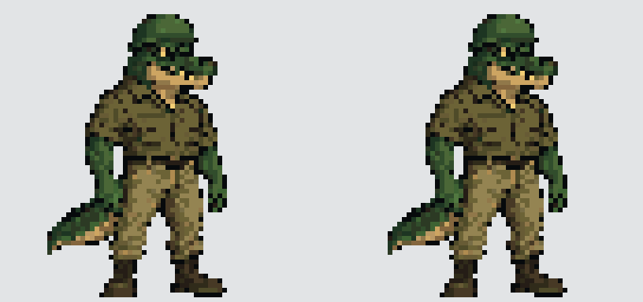

Comparação do idle
Pausar
Lento
Próximo frame
GIF entregue · anterior à esquerda, revisado à direita

Anterior
Revisado
Anterior · 64×64
Revisado · 64×64
Repouso
 Revisado
Revisado Revisado · 64×64
Revisado · 64×64